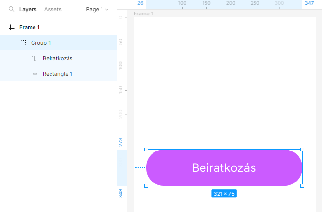
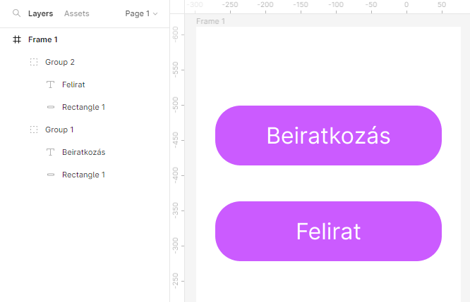
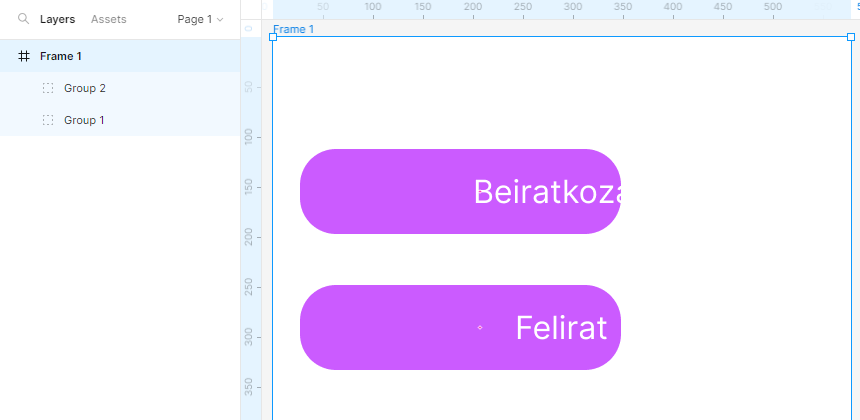
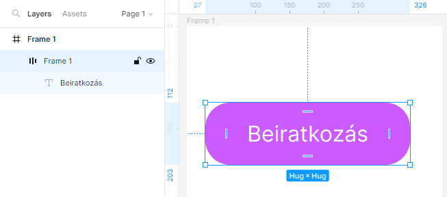
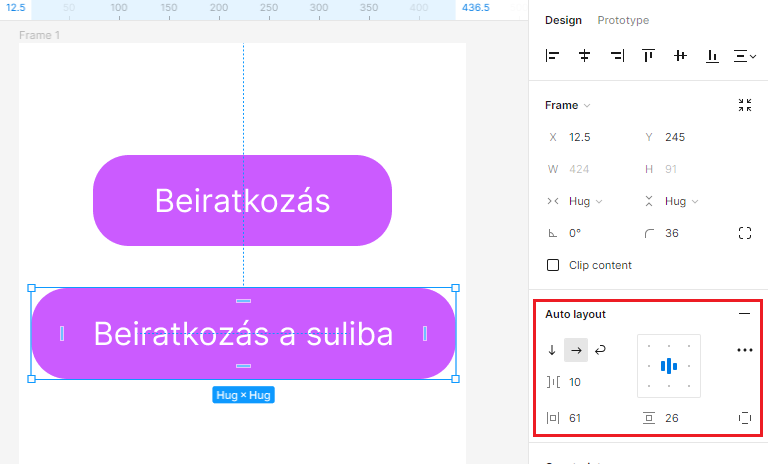
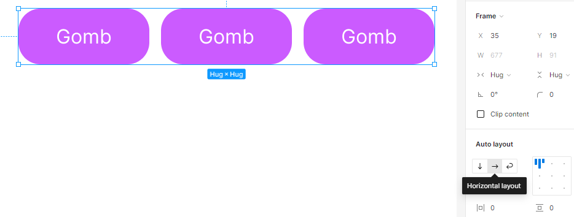
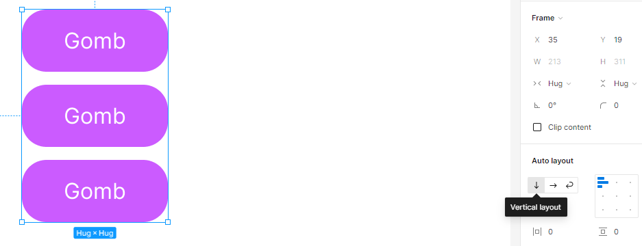
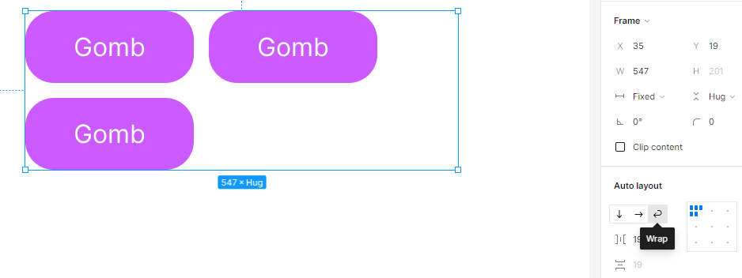

arrow_circle_up
Auto Layout:
-
Hozzunk létre egy gombot valamilyen szövegtartalommal. Majd
rendezzük őket csoportba (group)
a
ctrl + g billentyűkombinációval.

-
Duplikáljuk a gombot, majd írjuk át a szövegtartalmát.
Látható, hogy bizonyos tulajdonságok nem igazodnak
automatikusan (pl. belső eltartások). Nem reszponzív.

-
Méretezzük át a keretet. Most a szöveg kicsúszik a gombból.

-
Ezzek megelőzésére kapcsoljuk be az automatikus elrendezést
(Auto Layout). Ehhez a csoportot
kijelölve nyomjuk meg a
shift + A billentyűkombinációt.

-
Látható, hogy átalakult a csoportjelölés és "eltűnt" a
téglalap (Rectangle 1) ikonja.
És megjelentek a belső margó vonalkái az ábrán.
-
Most ha változtatunk a szövegen már reszponzívan követi, és
nem mászik ki a téglalapból.

-
Vízszintesen és függőlegesen is rendezhetem az elemeket.


-
A becsomagolás (wrap) funkcióval
átrendezhetővé tesszük az elemeket a határolóvonal mozgatása
esetén.

-
Tudjuk szabályozni
- a betűk távolságát
- a vízszintes belső eltartást
- a függőleges belső eltartást
- a szövegigazítást
Források:
Figma
Wikipedia